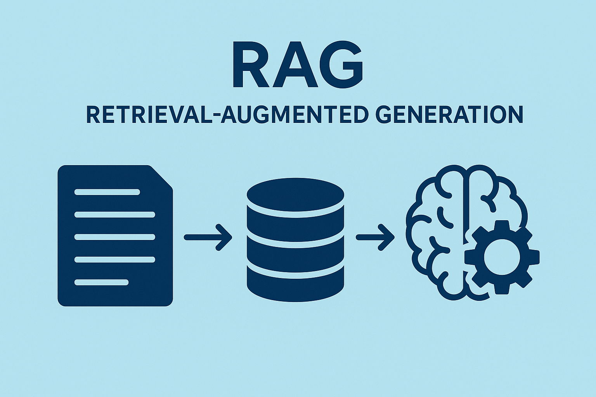
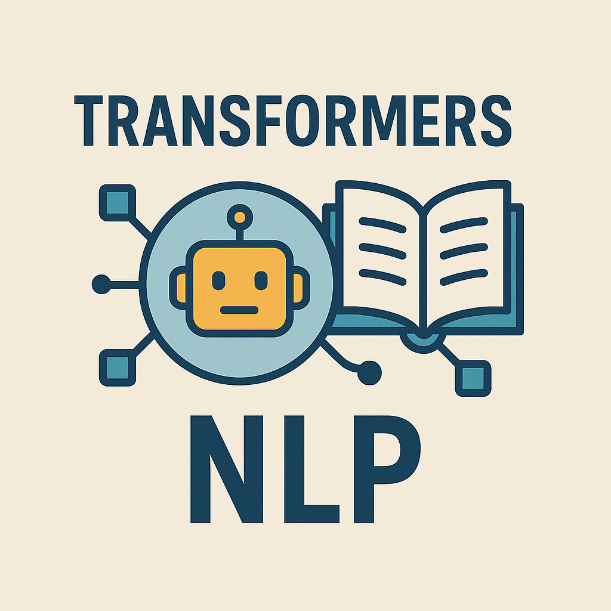

Loan Default Prediction — End-to-End MLOps Pipeline
MLOps
Repo:
github.com/JDede1/loan_default_prediction
Tech: Python, XGBoost, Scikit-learn, MLflow, Docker, Airflow, Vertex AI, Cloud Run, Terraform, Evidently AI, Optuna
Built an end-to-end MLOps pipeline covering data preparation, feature engineering, training, hyperparameter tuning,
evaluation, deployment, and monitoring. Experiments and models are tracked and registered in MLflow, with containerized
training and inference deployed on Cloud Run. Automated batch inference, retraining, and drift detection workflows
run via Airflow, with monitoring powered by Evidently AI.
RAG System for Canadian Banking FAQs
NLP • RAG

Repo:
github.com/JDede1/rag-project
Tech: Python, SentenceTransformers, FAISS, FastAPI, Streamlit, Phi-3 Mini
Developed a modular retrieval-augmented generation (RAG) pipeline with ingestion, preprocessing, embedding generation,
FAISS indexing, and LLM-based response generation. Implemented a FastAPI backend for retrieval and generation, with
optimized similarity search. Added reliability features such as an “I don’t know” fallback and a Streamlit UI with
evidence tracing.
Transformer Fine-Tuning — RoBERTa & BART NLP Pipeline
NLP

Repo:
github.com/JDede1/applied-nlp-assignment-4
Tech: Hugging Face Transformers, PyTorch, Datasets, Python
Created reproducible pipelines for fine-tuning RoBERTa and BART on classification and generative explanation tasks.
Implemented data preprocessing including tokenization, cleaning, and padding/truncation. Achieved around 0.93 accuracy
on classification tasks and strong BLEU/ROUGE metrics for generative outputs.
Credit Risk Classification — ML Modeling Pipeline
ML
Repo:
github.com/JDede1/final-project-assignment
Tech: Python, Pandas, Scikit-learn, XGBoost, Random Forest
Built supervised learning models to classify credit risk using engineered financial and behavioral features.
Performed data cleaning, outlier handling, imbalance correction, and feature scaling. Achieved around 90% accuracy
and approximately 96% recall, with interpretable analysis of key predictors and credit-risk drivers.
Additional work in computer vision (YOLOv5), Siamese neural networks for face verification, visualization dashboards, and
other ML experiments is available across my GitHub repositories.